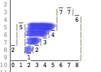

A functional solution to Twitter's waterflow problem
I recently came across an interview question from Twitter at Michael Kozakov’s blog
After some thought I managed to boil this down to a simple functional one-liner I thought was interesting enough to share. First, let’s take a look at the problem definition.
Quoting the original source:
“Consider the following picture:”

“In this picture we have walls of different heights. This picture is represented by an array of integers, where the value at each index is the height of the wall. The picture above is represented with an array as [2,5,1,2,3,4,7,7,6].”

“Now imagine it rains. How much water is going to be accumulated in puddles between walls?”
“We count volume in square blocks of 1x1. So in the picture above, everything to the left of index 1 spills out. Water to the right of index 7 also spills out. We are left with a puddle between 1 and 6 and the volume is 10.”
How would we go about finding a solution to this problem? I find this to be especially interesting, as there were many solutions posted to this problem over here that were incorrect. My own first intuition led me to a solution that didn’t cover all cases as well.
How can we analyze this problem such that we can get a solution and implementation that we can be confident is correct?
The approach I suggest would be to start with the question: “Given a block in this graph, when will it be filled with water?” We can assume there will be enough rain to fill any holes as far as is possible, so the only question is when the water will spill over to the side.
Then, the condition for the water to stay in a given square is that there is some wall to the left that is higher than the height of the given square, as well as some wall to the right that is higher that the height of the given square.
If we let \(h_i\) be the height of index \(i\), and let \(high_i^{left}\) denote the highest point to the left of index \(i\), and similarly define \(high_i^{right}\) we can express this as.
A sqaure of height \(h_i\), is filled when \[ h_i \leq high_i^{left} h_i high_i^{right} \]
We can simplify the conjunction by expressing this via \(min\)
\[ h_i \leq min(high_i^{left}, high_i^{right}) \]
We can now easily see that the height of the water level of each index, which we’ll call \(level_i\) can be expressed by turning this inequality into an equality.
\[ level_i = min(high_i^{left}, high_i^{right}) \]
This leaves us in good shape for actually computing the answer. We start by calculating the values if \(high\). Starting with \(high_i^{left}\) we note that this can be expressed as a simple recursive equation in terms of \(h\) and itself.
\[ high_0^{left} = h_0 \]
\[ high_{i+1}^{left} = max(h_{i+1} , high_i^{left}) \]
This a recursive relation, where we apply an operator max to accumulate values in the list h. We have a tool in the functional programming arsenal for computing exactly this, namely scanl1.
For e.g. the input h = [2,5,1,2,3,4,7,7,6] from the original post, we get
scanl1 max h >> [2,5,5,5,5,5,7,7,7]
Similarly for \( high_{right} \) we have
\[ high_n^{right} = h_n \]
\[ high_{i-1}^{right} = max(h_{i} , high_i^{left}) \]
And we can use scanr1 to compute it
scanr1 max h >> [7,7,7,7,7,7,7,7,6]
Now getting back to \(level\), which, as we recall, was defined as
\[ level_i = min(high_i^{left}, high_i^{right}) \]
This is easy to compute, we only need to apply a function (\(min\)) element-wise, which we can do via an application of zipWith
zipWith min (scanl1 max h) (scanr1 max h) >> [2,5,5,5,5,5,7,7,6]
Now we have defined the height of the water level at each index, all that is left is subtract the height of the “ground”, element-wise, to get the amount of water contributed at each index.
let level h = zipWith min (scanl1 max h) (scanr1 max h) zipWith (-) (level h) h >> [0,0,4,3,2,1,0,0,0]
Now all that remains is taking the sum of the contributions at each index. This is, of course, as simple as applying the sum function.
Our complete implementation is now
water h = sum $
zipWith (-)
(zipWith min (scanl1 max h) (scanr1 max h))
h
water [2,5,1,2,3,4,7,7,6]
>> 10
We can now be confident that our implementation is correct. The breakdown of the problem corresponds nicely to our mathematical analysis, and our code is clean and declarative. The only price we have to pay is a linear use of extra space (arising from the use of scanr1), which is cleverly avoided in Michael Kozakov’s imperative solution.